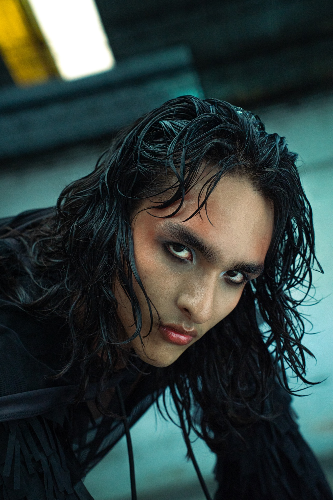
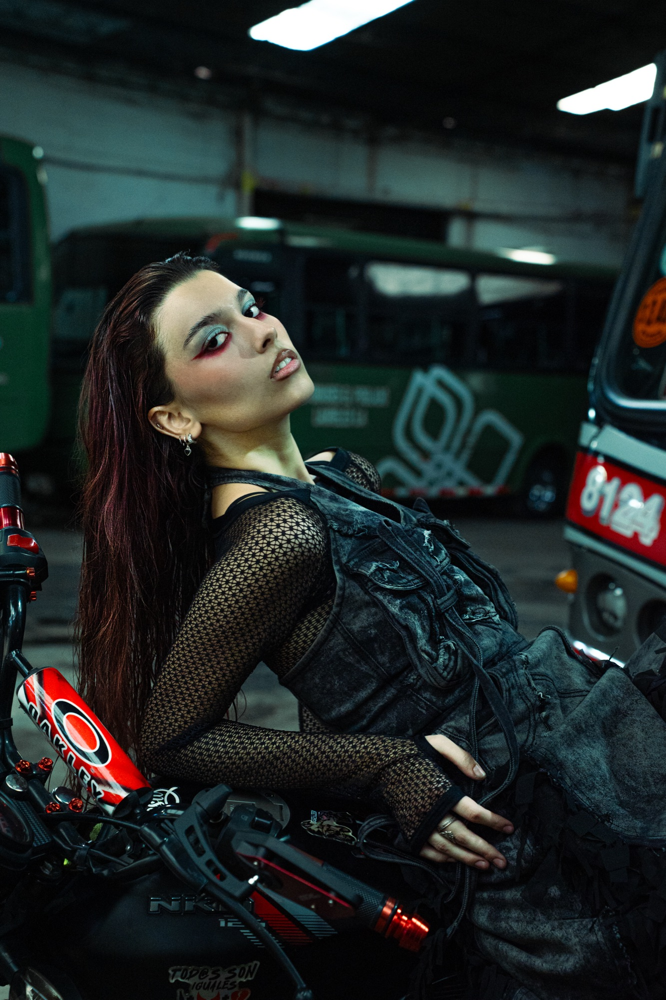
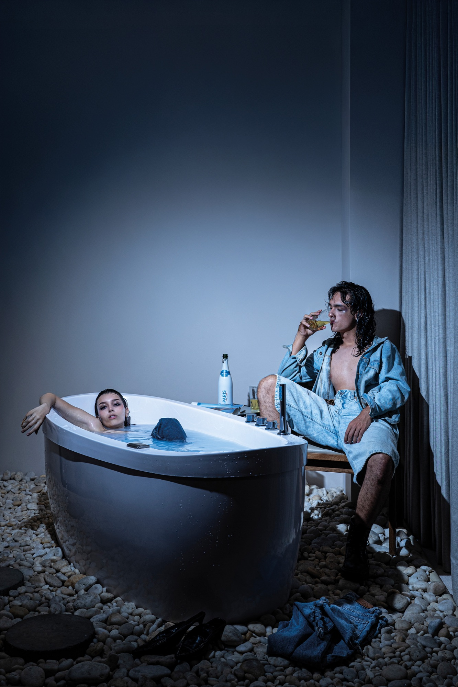
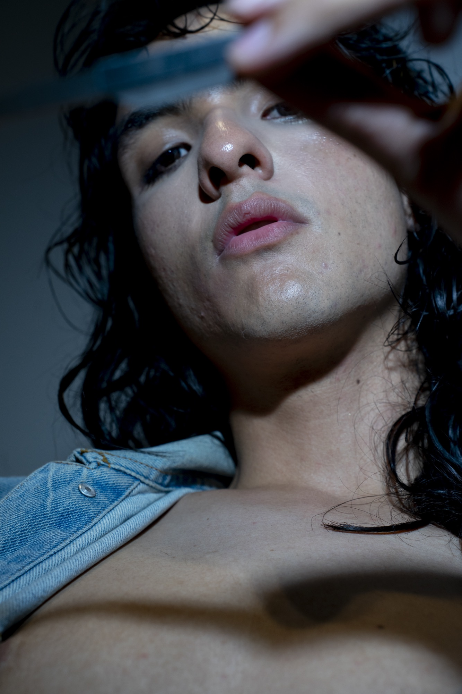
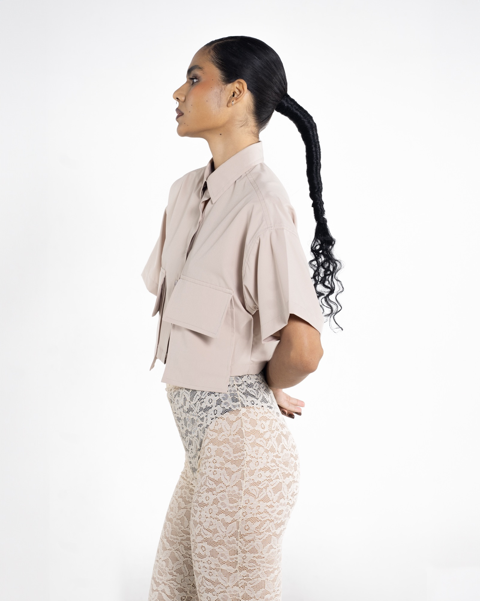
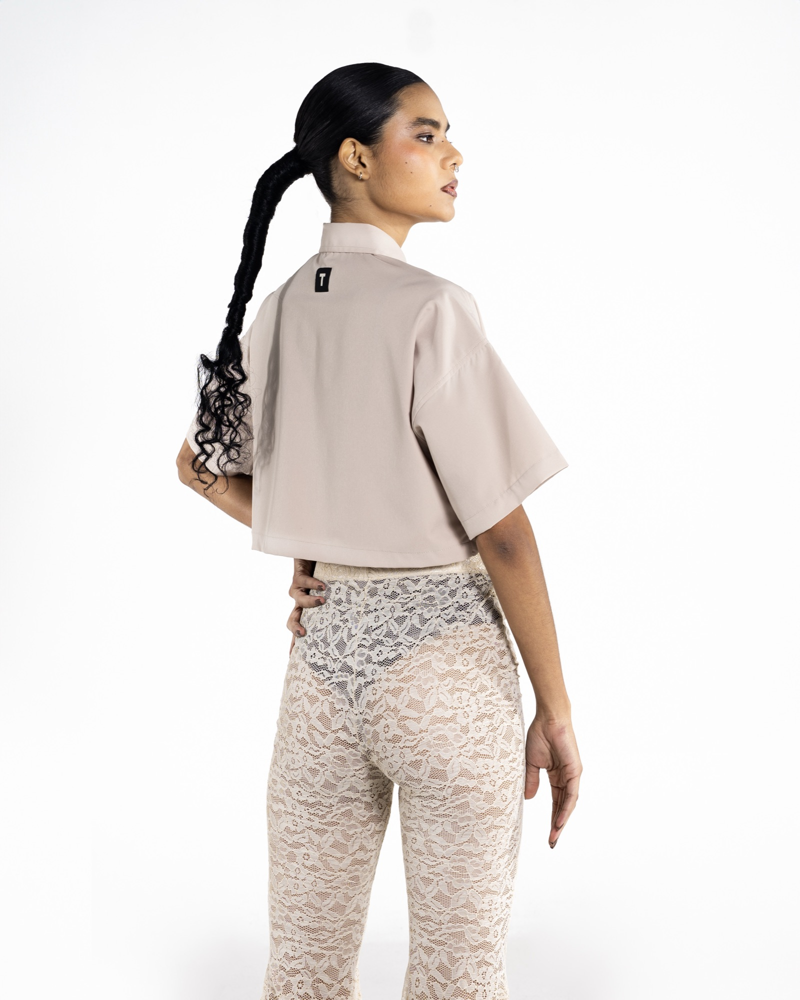
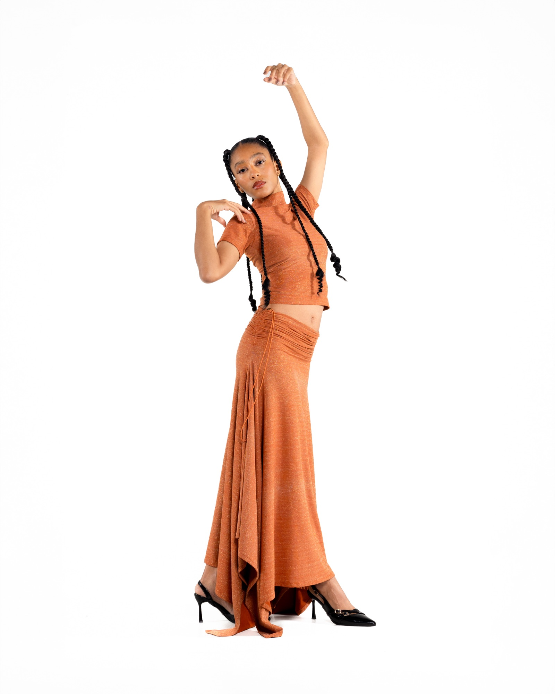
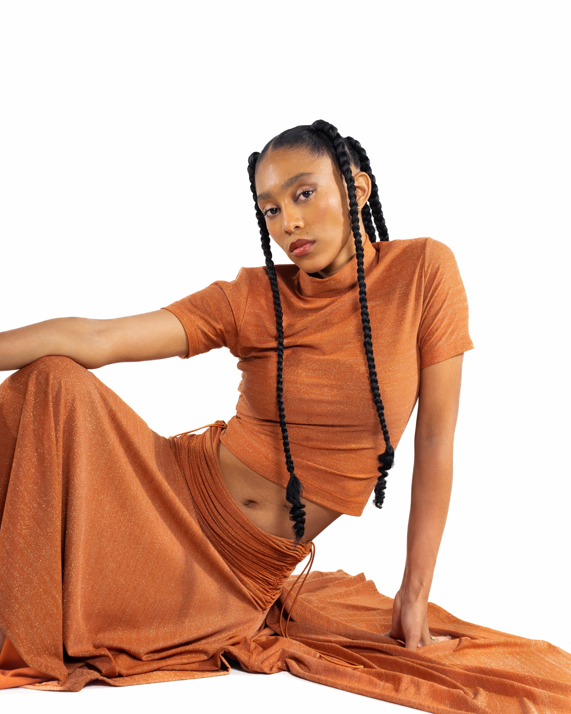
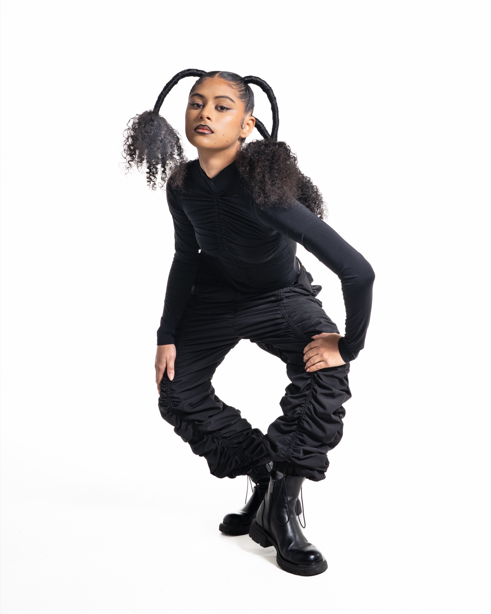

Fashion
Denim as identity. As rebellion. As rupture.

Denim as identity.
As rebellion. As rupture.
An editorial created in collaboration with The Odd Denim District, a brand featured on the Colombiamoda runway. Through bold silhouettes and expressive styling, the series explores denim as a material of self-expression, resistance, and transformation.





Form, texture,
and identity.
This lookbook was created for Taller de Vestuario, developed in close collaboration with the brand to translate its values into a coherent visual concept. The project highlights key pieces from their collection, focusing on form, texture, and identity.
Through styling, composition, and posing direction, the lookbook builds a visual language that reflects the essence of the brand while allowing each piece to stand on its own as a statement object.








- Project
- Odd Denim District
- Project
- Taller de Vestuario
- Credits — Taller
- Carolina Flórez
Ana Trujillo
Carlos Andrés
Sitadevi Zonneveld - Credits — Odd Denim
- Sitadevi Zonneveld
Ana Trujillo - Year
- 2023